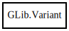

Variant
Object Hierarchy:

Description:
[ Compact ]
[ Version ( since = "2.24" ) ]
[ CCode ( get_value_function = "g_value_get_variant" , marshaller_type_name = "VARIANT" , param_spec_function = "g_param_spec_variant" , ref_function = "g_variant_ref" , ref_sink_function = "g_variant_ref_sink" , set_value_function = "g_value_set_variant" , take_value_function = "g_value_take_variant" , type_id = "G_TYPE_VARIANT" , type_signature = "v" , unref_function = "g_variant_unref" ) ]
public class Variant
Content:
Enums:
Static methods:
Creation methods:
- public Variant (string format, ...)
- public Variant.array (VariantType? child_type, Variant[] children)
- public Variant.boolean (bool value)
- public Variant.byte (uint8 value)
- public Variant.bytestring (string value)
- public Variant.bytestring_array (string[] value)
- public Variant.dict_entry (Variant key, Variant value)
- public Variant.double (double value)
- public Variant.from_bytes (VariantType type, Bytes bytes, bool trusted)
- public Variant.handle (int32 value)
- public Variant.int16 (int16 value)
- public Variant.int32 (int32 value)
- public Variant.int64 (int64 value)
- public Variant.maybe (VariantType? child_type, Variant? child)
- public Variant.object_path (string object_path)
- public Variant.objv (string[] value)
- public Variant.parsed (string format_string, ...)
- public Variant.printf (string format_string, ...)
- public Variant.signature (string signature)
- public Variant.string (string value)
- public Variant.strv (string[] value)
- public Variant.take_string (owned string str)
- public Variant.tuple (Variant[] children)
- public Variant.uint16 (uint16 value)
- public Variant.uint32 (uint32 value)
- public Variant.uint64 (uint64 value)
- public Variant.va (string format, char** end_ptr, va_list* app)
- public Variant.variant (Variant value)
Methods:
- public void @get (string format, ...)
- public Variant byteswap ()
- public bool check_format_string (string format_string, bool copy_only)
- public Class classify ()
- public int compare (Variant other)
- public string dup_bytestring (out size_t length)
- public string[] dup_bytestring_array ()
- public string[] dup_objv ()
- public string dup_string (out size_t length = null)
- public string[] dup_strv ()
- public bool equal (Variant other)
- public bool get_boolean ()
- public uint8 get_byte ()
- public unowned string get_bytestring ()
- public (unowned string)[] get_bytestring_array ()
- public void get_child (size_t index, string format_string, ...)
- public Variant get_child_value (size_t index)
- public void* get_data ()
- public Bytes get_data_as_bytes ()
- public double get_double ()
- public int32 get_handle ()
- public int16 get_int16 ()
- public int32 get_int32 ()
- public int64 get_int64 ()
- public Variant? get_maybe ()
- public Variant get_normal_form ()
- public (unowned string)[] get_objv ()
- public size_t get_size ()
- public unowned string get_string (out size_t length = null)
- public (unowned string)[] get_strv ()
- public unowned VariantType get_type ()
- public unowned string get_type_string ()
- public uint16 get_uint16 ()
- public uint32 get_uint32 ()
- public uint64 get_uint64 ()
- public void get_va (string format, char** end_ptr, va_list* app)
- public Variant get_variant ()
- public uint hash ()
- public bool is_container ()
- public bool is_floating ()
- public bool is_normal_form ()
- public bool is_of_type (VariantType type)
- public VariantIter iterator ()
- public bool lookup (string key, string format_string, ...)
- public Variant? lookup_value (string key, VariantType? expected_type)
- public size_t n_children ()
- public string print (bool type_annotate)
- public StringBuilder print_string (StringBuilder? builder, bool type_annotate)
- public void store (void* data)